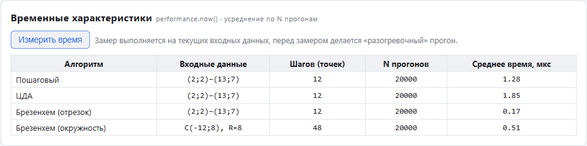

Цель: закрепление теоретического материала и практическое освоение базовых алгоритмов растеризации отрезков и кривых.
Задачи:
Во всех алгоритмах входные данные — целочисленные координаты концов отрезка A(x₁, y₁), B(x₂, y₂) (для окружности — центр C(x₀, y₀) и радиус R). Результат — последовательность узлов дискретной сетки, аппроксимирующих объект.
Вычисляется угловой коэффициент k = dy/dx, где dx = x₂−x₁, dy = y₂−y₁. k считается один раз, до цикла. Дальше работают две разные сущности: x — цикловая переменная, она просто увеличивается на 1 на каждом шаге (x += 1); y — не переменная, а функция от x: на каждом шаге она вычисляется заново по формуле и округляется до ближайшего целого — это жадный выбор ближайшего к идеальной прямой пикселя:
Проблема крутых отрезков (|dy| > |dx|, т.е. |k| > 1): одно приращение x даёт приращение y больше единицы — пиксели по оси y пропускаются и линия получается разрывной. Поэтому для крутых отрезков цикл ведётся по y с пересчётом x = x₁ + (y − y₁)/k, то есть алгоритм вынужден иметь две ветки с делением, а в цикле — вещественное умножение и округление на каждом шаге.
Идея — равномерное движение от A к B. За L шагов нужно суммарно пройти расстояние dx по оси x и dy по оси y, поэтому за один шаг каждая координата меняется на маленькую дробную величину
Здесь dx = x₂ − x₁ и dy = y₂ − y₁ — просто разности координат концов. Запись x₀ = x₁, y₀ = y₁ означает то, что накопители координат стартуют из точки A (это точка с номером i = 0); «дельты» — это Δx и Δy, вычисленные выше. Деление выполняется один раз, в цикле — только сложение.
Число шагов L берёт равным max(|dx|, |dy|), чтобы шаг по любой оси не превышал 1 и линия не рвалась. Примеры: для пологого отрезка |dx| > |dy| получается Δx = 1 (x идёт ровно по одному пикселю за шаг), для крутого — Δy = 1. Для отрезка (2; 2)–(13; 7): dx = 11, dy = 5, L = 11, Δx = 1, Δy = 5/11 ≈ 0,4545; каждый шаг x += 1, y += 0,4545 (см. таблицу 3.2).
Недостаток: вещественная арифметика, а на очень длинных отрезках накапливается ошибка округления float.
Связь с пошаговым алгоритмом: при |dx| > |dy| ЦДА математически совпадает с пошаговым — получается Δx = 1 (x увеличивается на 1, как у пошагового), а y наращивается на dy/dx (то же самое приращение k). Различия только в технике: пошаговый вычисляет y = y₁ + k·(x − x₁) заново каждый шаг (умножение), ЦДА накапливает y += Δy (сложение, поэтому он и «дифференциальный»), и ЦДА — единый код для всех октантов без ветвления, а пошаговому нужны две ветки.
На каждом шаге выбирается один из двух соседних пикселей — (x+1, y) («горизонтальный» шаг) или (x+1, y+1) («диагональный»). Координаты меняются на ±1 : за шаг либо меняется только x, либо x и y вместе. Решение принимается по знаку параметра ошибки (все вычисления — целочисленные):
где sx, sy — направления шага (±1) по осям. Здесь важно: проверяются два независимых условия с разными порогами — не «e > 0 и e < 0» (они действительно несовместны), а «e > −dy» (меняем ли x) и «e < dx» (меняем ли y). Поскольку пороги разные, оба условия могут оказаться истинны одновременно — тогда координаты меняются вместе (диагональный шаг). Пример: dy = 5, dx = 11, e = 2: 2 > −5 верно и 2 < 11 верно → x += 1 и y += 1. В примере из п. 3.3 видно чередование: шаги 0, 2, 4 — только x; шаги 1, 3 — x и y одновременно.
Запишем прямую в виде F(x, y) = dy·(x − x₁) − dx·(y − y₁) = 0 (F = 0 на прямой, F > 0 ниже прямой, т.к. рост y уменьшает F). Вместо вычисления расстояния до прямой сравним двух кандидатов через серединную точку M = (x+1, y+0.5), лежащую ровно между ними: если прямая прошла выше M, ближе пиксель (x+1, y+1), иначе — (x+1, y). Проверять будем знак D = 2·F(M) — множитель 2 убирает дробную 0.5, поэтому D всегда целое:
Ключевой трюк — F пересчитывается не с нуля, а наращением. При горизонтальном шаге середина сдвигается на (1, 0), F вырастает на dy, значит D += 2·dy. При диагональном — сдвиг (1, 1), F меняется на dy − dx, значит D += 2·(dy − dx). Так в цикле остаются только целочисленные сложения и сравнения. Запись в коде приложения (d = dx − dy, сравнения 2d с −dy и dx) — алгебраически эквивалентная форма: D ≡ dx − 2·d. Она записана «симметрично» и потому работает для всех восьми октантов через знаки sx, sy. Это самый быстрый из рассмотренных алгоритмов: вещественная арифметика и деление полностью исключены.
Строится только 1/8 часть окружности — дуга от (0, R) до пересечения с прямой y = x (пока x ≤ y): уравнение x² + y² = R² симметрично относительно осей и биссектрис, поэтому каждая найденная точка (x, y) даёт сразу 8 точек (±x, ±y) и (±y, ±x) со смещением (x₀, y₀). В этом октане наклон окружности меняется от 0 до −1, поэтому за один шаг x увеличивается на 1, а y либо остаётся, либо уменьшается на 1 — всего два кандидата: (x+1, y) и (x+1, y−1).
Важно, кто здесь ведущая переменная: в этом октане |наклон| дуги не превосходит 1 (от 0 в точке (0, R) до −1 на биссектрисе), поэтому x растёт на каждом шаге ровно на 1, а y только иногда уменьшается — чисто «диагональных» шагов вида (x+1, y+1), как у отрезка, здесь нет. Зеркальный октант от точки (R, 0), где ведущей была бы y (y += 1 каждый шаг, x стоит или уменьшается), отдельно не строится — его пиксели получаются транспозицией (x, y) → (y, x).
Введём F(x, y) = x² + y² − R² (0 на окружности, < 0 внутри круга). Чтобы решить, какой из двух кандидатов ближе к окружности, посмотрим на серединную точку M = (x+1, y−0,5) между ними. Вместо F(M) с дробной 0,5 удобнее взять сумму ошибок обоих кандидатов:
Знак d говорит, по какую сторону от середины прошла окружность: d < 0 — окружность выше M, берём (x+1, y), y не меняем; d ≥ 0 — берём (x+1, y−1) и уменьшаем y.
Начальное значение: стартуем из (0, R), поэтому d₀ = 2·1² + R² + (R−1)² − 2R² = 3 − 2R.
Наращивание вместо пересчёта: квадраты обновляются через разности (x+2)² − (x+1)² = 2x + 3; (y−1)² − y² = −2y + 1; (y−2)² − (y−1)² = −2y + 3. При выборе (x+1, y): d += 2·(2x+3) = 4x + 6. При выборе (x+1, y−1): d += 2·(2x+3) + (−2y+1) + (−2y+3) = 4·(x − y) + 10. Все коэффициенты чётные — в цикле только целочисленные сложения.
Проверка на R = 8 (таблица 3.4): d₀ = 3 − 16 = −13 ✓; шаг 0: d < 0 → (1; 8), d += 6 → −7 ✓; шаг 1: d += 10 → 3 ✓; шаг 2: d ≥ 0 → (3; 7), y = 7, d += 4·(2−8) + 10 = −11 ✓. Условие x ≤ y означает, что дуга дошла до линии симметрии y = x — остальное дорисует 8-кратная симметрия.
Отрезок A(2, 2) → B(13, 7): dx = 11, dy = 5, 0 < k = 5/11 ≈ 0,4545 < 1.
| x | y = 2 + k·(x−2) | round(y) | пиксель |
|---|---|---|---|
| 2 | 2,00 | 2 | (2; 2) |
| 3 | 2,45 | 2 | (3; 2) |
| 4 | 2,91 | 3 | (4; 3) |
| 5 | 3,36 | 3 | (5; 3) |
| 6 | 3,82 | 4 | (6; 4) |
| 7 | 4,27 | 4 | (7; 4) |
| 8 | 4,73 | 5 | (8; 5) |
| 9 | 5,18 | 5 | (9; 5) |
| 10 | 5,64 | 6 | (10; 6) |
| 11 | 6,09 | 6 | (11; 6) |
| 12 | 6,55 | 7 | (12; 7) |
| 13 | 7,00 | 7 | (13; 7) |
| i | x | y | round(x), round(y) |
|---|---|---|---|
| 0 | 2,00 | 2,00 | (2; 2) |
| 1 | 3,00 | 2,45 | (3; 2) |
| 2 | 4,00 | 2,91 | (4; 3) |
| 3 | 5,00 | 3,36 | (5; 3) |
| 4 | 6,00 | 3,82 | (6; 4) |
| 5 | 7,00 | 4,27 | (7; 4) |
| 6 | 8,00 | 4,73 | (8; 5) |
| 7 | 9,00 | 5,18 | (9; 5) |
| 8 | 10,00 | 5,64 | (10; 6) |
| 9 | 11,00 | 6,09 | (11; 6) |
| 10 | 12,00 | 6,55 | (12; 7) |
| 11 | 13,00 | 7,00 | (13; 7) |
| i | пиксель (x; y) | d | e = 2d | решение |
|---|---|---|---|---|
| 0 | (2; 2) | 6 | 12 | x+1 (12 > −5) |
| 1 | (3; 2) | 1 | 2 | x+1, y+1 (2 > −5, 2 < 11) |
| 2 | (4; 3) | 7 | 14 | x+1 (14 ≮ 11) |
| 3 | (5; 3) | 2 | 4 | x+1, y+1 |
| 4 | (6; 4) | 8 | 16 | x+1 |
| 5 | (7; 4) | 3 | 6 | x+1, y+1 |
| 6 | (8; 5) | 9 | 18 | x+1 |
| 7 | (9; 5) | 4 | 8 | x+1, y+1 |
| 8 | (10; 6) | 10 | 20 | x+1 |
| 9 | (11; 6) | 5 | 10 | x+1, y+1 |
| 10 | (12; 7) | 11 | 22 | x+1 |
| 11 | (13; 7) | конец отрезка | ||
Все три алгоритма выдали один и тот же набор из 12 пикселей. В общем случае расхождения возможны — на граничных (tie) случаях, когда идеальная прямая проходит ровно посередине между двумя пикселями. Пример — отрезок (8; 2)–(17; 12), dx = 9, dy = 10 (крутой, цикл по y, x = 8 + 0,9·(y − 2)):
| y | x вычисл. | round(x) — пошаговый и ЦДА | Брезенхем |
|---|---|---|---|
| 6 | 11,60 | (12; 6) | (12; 6) |
| 7 | 12,50 — ровно посередине | (13; 7) — round округляет 0,5 вверх | (12; 7) — при D = 0 шаг горизонтальный |
| 8 | 13,40 | (13; 8) | (13; 8) |
Оба ответа одинаково близки к идеальной прямой (пиксели равноудалены) — алгоритмы просто по-разному разрешают ничью: пошаговый и ЦДА через round() (половина вверх), Брезенхем через условие D > 0 (при равенстве — горизонталь). Это различие правил округления, а не ошибка реализации. В остальном алгоритмы эквивалентны по качеству и различаются типом арифметики и скоростью.
| шаг | x | y | d | обновление d | проставляемые точки (8 симметричных) |
|---|---|---|---|---|---|
| 0 | 0 | 8 | −13 | d < 0 → d += 4·0 + 6 = −7 | (0;8) (0;−8) (8;0) (−8;0) |
| 1 | 1 | 8 | −7 | d < 0 → d += 4·1 + 6 = 3 | (±1; ±8), (±8; ±1) |
| 2 | 2 | 8 | 3 | d ≥ 0 → d += 4·(2−8) + 10 = −11, y = 7 | (±2; ±8), (±8; ±2) |
| 3 | 3 | 7 | −11 | d < 0 → d += 4·3 + 6 = 7 | (±3; ±7), (±7; ±3) |
| 4 | 4 | 7 | 7 | d ≥ 0 → d += 4·(4−7) + 10 = 5, y = 6 | (±4; ±7), (±7; ±4) |
| 5 | 5 | 6 | 5 | цикл завершается: x = 6 > y = 5 | (±5; ±6), (±6; ±5) |
Всего 6 итераций вместо перебора всех точек окружности: всего проставлено 48 пикселей.
Методика: замер выполнялся в браузере (Chromium, движок V8) с помощью
performance.now(). Каждый алгоритм прогонялся N = 20 000 раз на одних
и тех же входных данных (перед замером — «разогревочный» прогон для компиляции
кода движком JS). Первая таблица — одна серия замера из интерфейса приложения
(рис. 1), вторая — медиана из пяти серий. Абсолютные значения зависят от
аппаратного обеспечения и заметно «плавают» между сериями (±30…50 %), поэтому
важна относительная скорость алгоритмов.
| Алгоритм | Шагов (точек) | Среднее время, мкс | мкс / шаг |
|---|---|---|---|
| Пошаговый | 12 | 1,28 | ≈ 0,11 |
| ЦДА | 12 | 1,85 | ≈ 0,15 |
| Брезенхем (отрезок) | 12 | 0,17 | ≈ 0,014 |
| Брезенхем (окружность) C(−12; 8), R = 8 | 48 | 0,51 | — |
| Алгоритм | Шагов (точек) | Среднее время, мкс | мкс / шаг |
|---|---|---|---|
| Пошаговый | 111 | 10,90 | ≈ 0,10 |
| ЦДА | 111 | 20,32 | ≈ 0,18 |
| Брезенхем (отрезок) | 111 | 2,14 | ≈ 0,019 |
| Брезенхем (окружность) C(0; 0), R = 30 | 176 | 1,44 | — |

Выводы по времени: